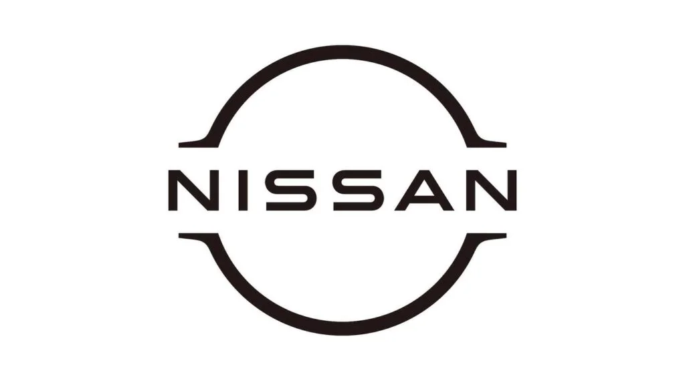

Nissan es una marca de origen japonés que ha llegado a convertirse en uno de los fabricantes de vehículos más conocidos. Un factor que ha conseguido esto, es la gran capacidad de esta marca para mantenerse en la vanguardia tecnológica, algo que le ha ayudado a estar siempre presente a lo largo de la historia del sector del automóvil. Su nombre procede de “Nippon Sangyo” que en español significa “Industrias Japonesas” y se empezó a utilizar en el 1928. En su origen se dedicaba a la fabricación de los motores que el ejército japonés utilizó en la segunda guerra mundial. También fabricó camiones y aviones. Además, antes de producir coches, se dedicaba al negocio de autopartes y a las fundiciones metalúrgicas. No fue hasta 1934 cuando compró la compañía DAT y se unió con la división automotriz Tobata Casting dando paso al nacimiento de Nissan Motor Co. Con el paso de los años se ha convertido en un referente del panorama actual, compitiendo con los mejores fabricantes de automóviles del sector. Modelos de la marca como Juke, Leaf, Micra, Note o Pulsar son una clara representación de la gran evolución de la marca. En concreto el Modelo Juke destaca por haber sido el pionero de los SUV, llegando a ser el primero que supo recoger lo mejor de un vehículo utilitario y deportivo. Este serviría de referencia para otros muchos vehículos de la gama.
Al principio de la marca, el logotipo era un círculo rojo con un rectángulo azul con el nombre en blanco dentro. Años después, pasó a tomar su actual diseño de una circunferencia metálica grisácea con el nombre de la marca en medio. El logotipo llegó a cambiar hasta ocho veces pasando por varios diseños desde el original al actual.
Nissan es una marca de origen japonés que ha llegado a convertirse en uno de los fabricantes de vehículos más conocidos. Un factor que ha conseguido esto, es la gran capacidad de esta marca para mantenerse en la vanguardia tecnológica, algo que le ha ayudado a estar siempre presente a lo largo de la historia del sector del automóvil. Su nombre procede de “Nippon Sangyo” que en español significa “Industrias Japonesas” y se empezó a utilizar en el 1928. En su origen se dedicaba a la fabricación de los motores que el ejército japonés utilizó en la segunda guerra mundial. También fabricó camiones y aviones. Además, antes de producir coches, se dedicaba al negocio de autopartes y a las fundiciones metalúrgicas. No fue hasta 1934 cuando compró la compañía DAT y se unió con la división automotriz Tobata Casting dando paso al nacimiento de Nissan Motor Co. Con el paso de los años se ha convertido en un referente del panorama actual, compitiendo con los mejores fabricantes de automóviles del sector. Modelos de la marca como Juke, Leaf, Micra, Note o Pulsar son una clara representación de la gran evolución de la marca. En concreto el Modelo Juke destaca por haber sido el pionero de los SUV, llegando a ser el primero que supo recoger lo mejor de un vehículo utilitario y deportivo. Este serviría de referencia para otros muchos vehículos de la gama. Cambios en el logotipo Al principio de la marca, el logotipo era un círculo rojo con un rectángulo azul con el nombre en blanco dentro. Años después, pasó a tomar su actual diseño de una circunferencia metálica grisácea con el nombre de la marca en medio. El logotipo llegó a cambiar hasta ocho veces pasando por varios diseños desde el original al actual. Logo original Logo actual Evolución a lo largo de los años El primer vehículo de producción en serie de Japón creado por la marca fue el Type 15 que se originó en el 1937. Veinte años después se fabricó el modelo Skyline, el coupé de tracción en las ruedas traseras precursor del exitoso GT-R. Al siguiente año se fabricó el Datsun 1000 Sedan que fue el primer Datsun que se lanzado al mercado de USA. Posteriormente, en 1959, la primera camioneta compacta de Datsun establece sólidamente a la marca en el mercado americano. Los años 70 fueron una década excelente, llegando a vender un millón de Datsun y pasando a ser el principal importador de vehículos en los Estados Unidos. En los años 80, mientras el resto de marcas intentaban forjar sus identidades, esta siguió enfocándose tanto en las exhibiciones como en las pistas de carrera. Un dato curioso de la marca es que cuentan con una fábrica llamada “Global Production Engineering Center” que no se dedica a la fabricación de vehículos, sino que exclusivamente transfiere el conocimiento al resto de plantas repartidas por el mundo para tener un personal más capacitado para un buen desempeño tecnológico. Además cuenta con un modelo eléctrico llamado LEAF que se creó con material de plástico reciclado llegando a poder reciclarse hasta el 99% de su totalidad. Este modelo se creó en el 2010 siendo el primer automóvil 100% eléctrico de la marca. Esta primera versión ha tenido distintas nuevas versiones a lo largo de los años hasta llegar al último LEAF PLUS. Actualmente esta marca es considerada más que una compañía de fabricación de automóviles, es una compañía de innovación. Toman el pensamiento más innovador combinándolo con desempeño, el valor, la eficiencia, la seguridad y el estilo.